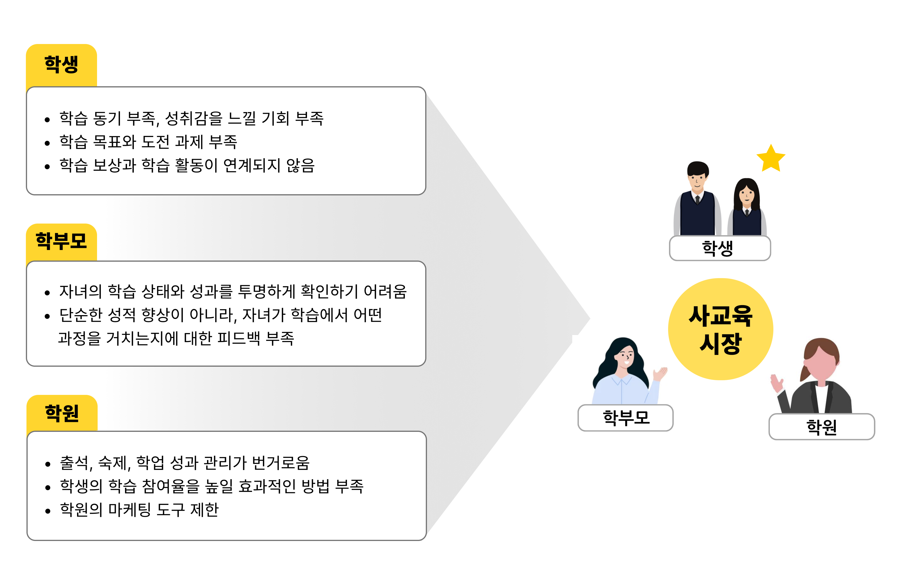
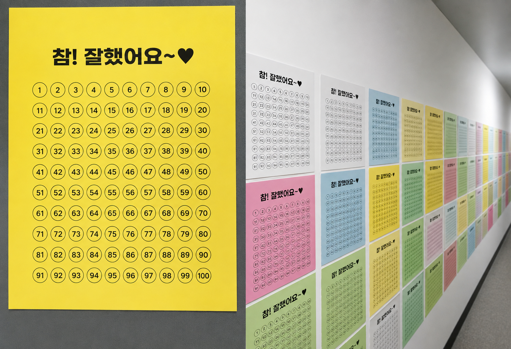
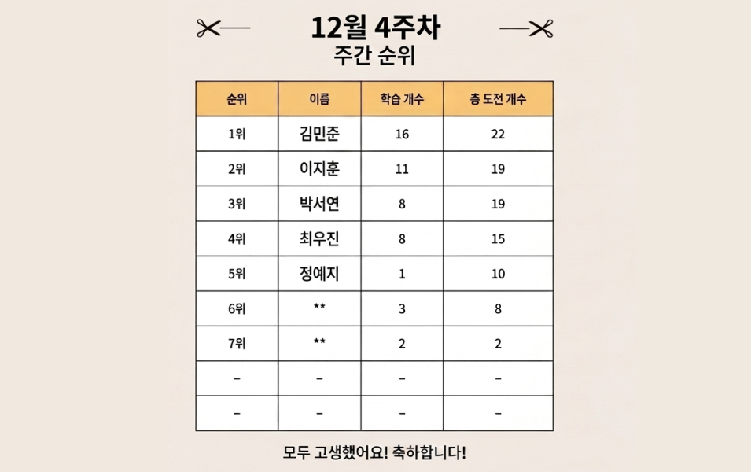
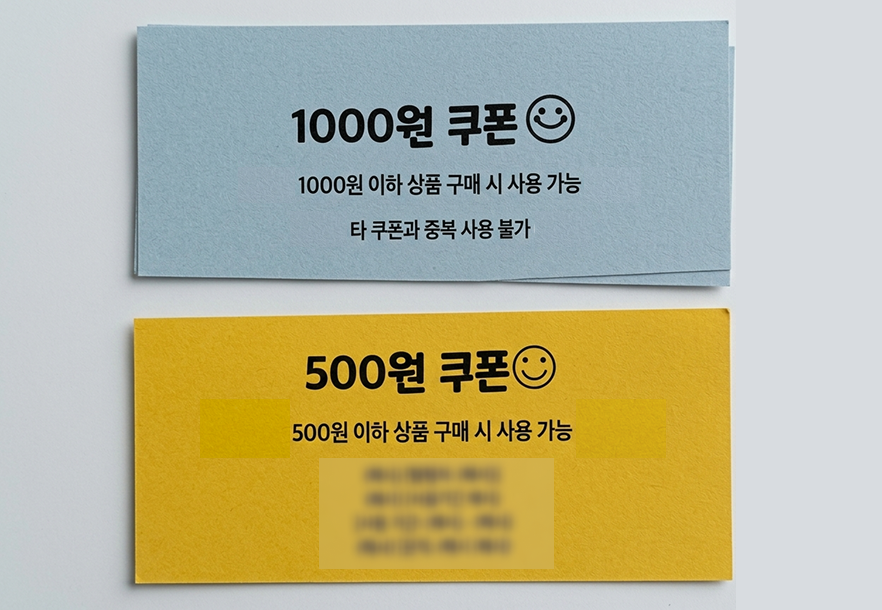
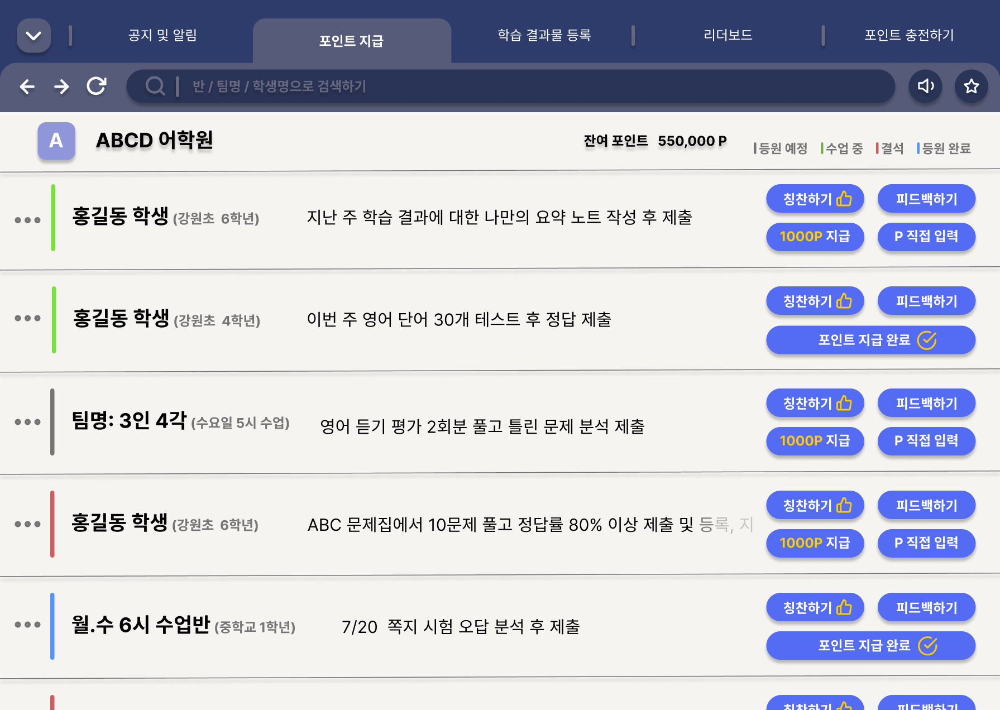
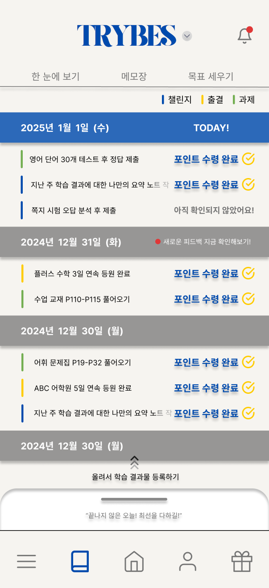
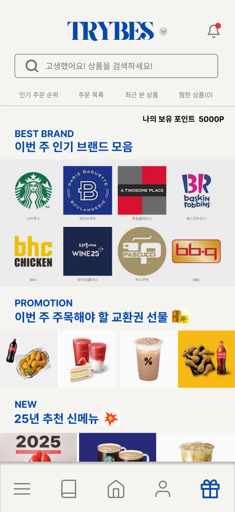
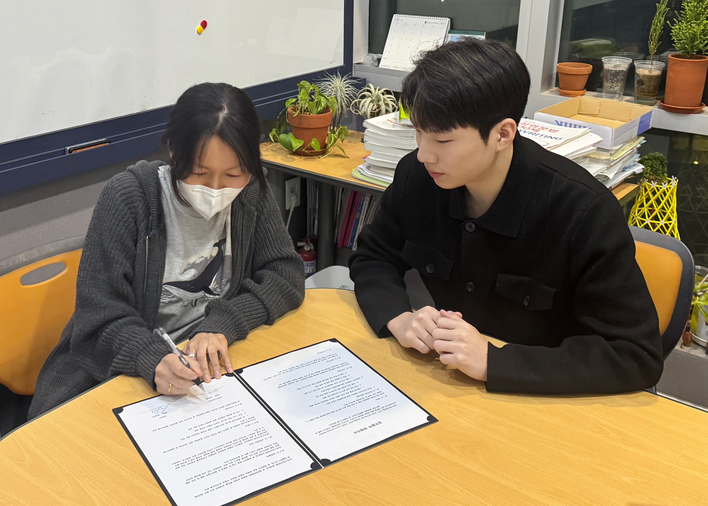
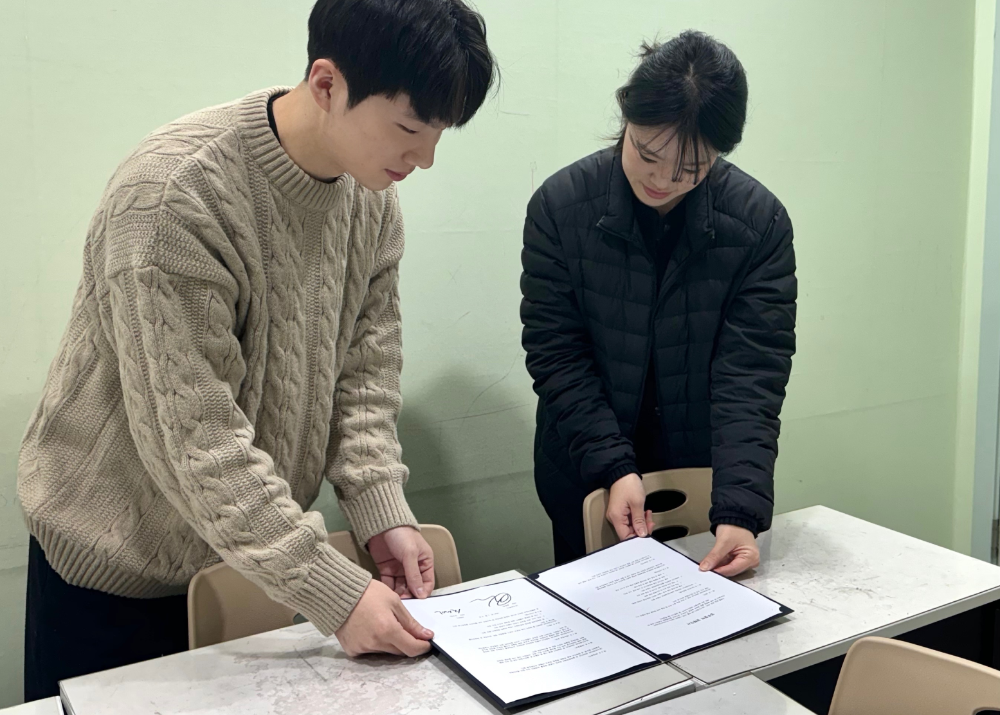
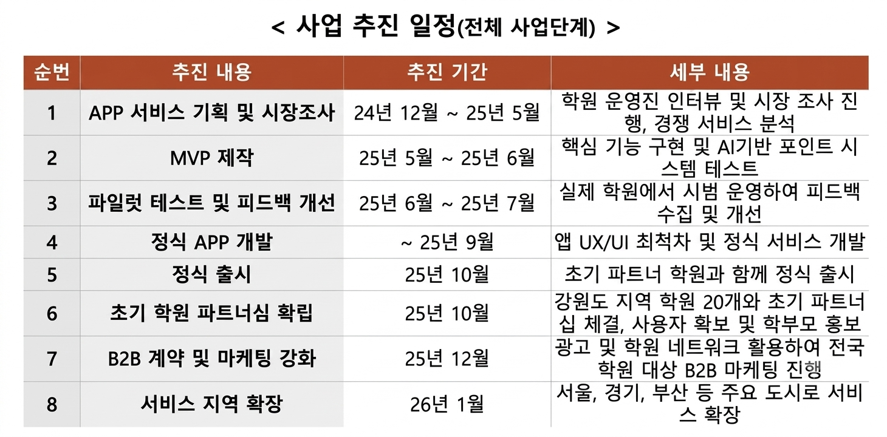

동기와 성취감의 부재
학습 동기가 부족하고 성취감을 느낄 기회가 적었습니다. 학습 목표와 도전 과제가 없어 보상과 학습 활동이 연결되지 않았습니다.
Startup · Service Planning · Business Planning · 2025
현장의 아이디어를, 사업의 가능성으로 확장하다
학생의 학습 노력을 즉각적인 보상으로 연결하는 방식을 학원 현장에서 먼저 검증하고, 여러 학원이 사용할 수 있는 서비스로 확장한 창업 프로젝트입니다. 앱을 만들기 전에 종이 도장판과 쿠폰으로 가설을 확인한 뒤, 서비스 기획과 사업계획서까지 이어갔습니다.
45% → 95%
도장판 운영 전후 비교
약 90%
대상 학생의 챌린지 참여율
85%
도장을 적립한 학생 중 쿠폰 교환 선택 비율
앱을 만들기 전, 70명의 학생을 대상으로 6주간 진행한 오프라인 현장 테스트에서 확인한 변화입니다.

01Problem
성적이 오르기까지 기다리는 대신, 오늘의 노력에 바로 반응하는 방법을 고민했습니다
학원에서 학생들을 가르치며, 공부에 흥미를 잃거나 스스로 학습하려는 의지가 낮아지는 모습을 반복해서 보았습니다. 시험 성적이나 입시 결과는 학생에게 분명한 성과가 될 수 있지만, 노력과 결과 사이의 시간이 길어 매일의 학습을 지속시키는 동기로 작동하기 어려웠습니다.
문제는 공부를 잘하는 학생에게 더 많은 보상을 주는 것이 아니라, 공부하기 싫어하는 학생도 작은 목표부터 행동하게 만들 수 있는 계기가 필요하다는 점이었습니다.
학습 동기가 부족하고 성취감을 느낄 기회가 적었습니다. 학습 목표와 도전 과제가 없어 보상과 학습 활동이 연결되지 않았습니다.
자녀의 학습 상태와 성과를 투명하게 확인하기 어려웠습니다. 성적 향상뿐 아니라 어떤 과정을 거치는지에 대한 피드백이 부족했습니다.
출석, 숙제, 학업 성과 관리가 번거로웠고 학생의 학습 참여율을 높일 효과적인 방법과 마케팅 도구가 부족했습니다.
학생의 동기 부족은 개인의 문제에 그치지 않고, 학습 참여 저하와 학원의 관리 부담, 학부모의 불만으로 이어질 수 있다고 보았습니다.
당시 학원에서는 열심히 공부하거나 좋은 성과를 낸 학생에게 자체 제작한 쿠폰을 지급했습니다. 학생은 받은 쿠폰을 같은 건물 문구점에서 현금처럼 사용할 수 있었고, 학원은 한 달에 한 번 문구점에 모인 쿠폰 금액을 정산했습니다.
새로운 아이디어를 상상해서 만든 것이 아니라, 이미 굴러가고 있던 방식을 관찰하는 데서 시작했습니다. 공부의 결과가 나오기 전에도 작은 노력에 즉각적인 보상을 연결하면, 학생이 다음 행동을 시작하도록 유도할 수 있지 않을까 하는 가능성을 발견했습니다.
이 작은 쿠폰 제도를 디지털화하면, 우리 학원뿐 아니라 다른 학원에서도 학생의 학습 동기를 만드는 도구로 사용할 수 있지 않을까?
이 질문에서 TRYBES의 아이디어가 시작되었습니다.
02Validation
보상이 실제로 학생의 행동을 바꿀 수 있는지 확인했습니다
TRYBES를 바로 앱으로 만들기보다, 보상 시스템이 실제로 학생의 학습 참여를 높일 수 있는지 학원 현장에서 먼저 검증했습니다. 출석, 숙제 제출, 학습 태도와 같은 행동에 따라 도장을 지급하고, 학생이 모은 도장을 직접 확인할 수 있도록 도장판을 운영했습니다. 도장 수를 기준으로 리더보드를 운영해 자신의 성취와 순위를 확인할 수 있도록 했습니다.
검증은 70명의 학생을 대상으로 6주 동안 진행했고, 과제 제출률은 도장판 운영 전후를 비교해 집계했습니다.



학원은 학생의 행동에 따라 보상을 지급하고, 학생은 자신이 모은 도장을 눈으로 확인한 뒤 원하는 보상으로 교환할 수 있었습니다. 문구점에서 사용된 쿠폰은 월말에 학원이 직접 정산했습니다.
그 결과 과제 제출률은 45%에서 95%로 올랐고, 연속 출석 챌린지 참여율은 약 90%, 도장을 적립한 학생 중 85%가 쿠폰 교환을 선택했습니다.
보상이 흥미로운 아이디어인지 묻는 데서 그치지 않고, 실제 학습 행동이 달라지는지 현장에서 확인했습니다.
03Service
오프라인에서 효과를 확인한 구조를 앱 안의 학습 흐름으로 옮겼습니다
현장 테스트를 통해 작은 목표를 제시하고 달성한 행동에 보상을 연결하는 방식이 학생의 참여를 유도할 수 있다는 가능성을 확인했습니다. 이후 이 구조를 특정 학원과 문구점에 한정하지 않고, 여러 학원이 사용할 수 있는 서비스로 확장하고자 TRYBES를 기획했습니다.
TRYBES에서는 학원이 학생에게 학습 목표와 챌린지를 제시하고, 학생이 이를 달성하면 포인트를 지급받도록 했습니다. 학생은 획득한 포인트를 앱 내 마켓에서 원하는 상품으로 교환할 수 있도록 구성했습니다.
아래 화면은 모두 인터랙티브 프로토타입입니다. 실제 앱 개발까지는 진행하지 않았고, 설계와 사업 계획 단계에서 프로젝트를 마무리했습니다.
학원 관계자는 학생에게 포인트를 지급하고, 숙제나 챌린지 달성 여부를 확인할 수 있도록 했습니다. 학원이 학생마다 필요한 목표를 제시하고, 달성한 행동에 즉각적으로 피드백과 보상을 연결하는 역할을 맡도록 구성했습니다.

학생은 자신의 과제나 챌린지를 확인하고, 완료한 학습 결과를 등록한 뒤 학원의 확인을 통해 포인트를 받을 수 있도록 했습니다.
단순히 포인트 잔액을 보여주는 데서 그치지 않고, 어떤 행동으로 포인트를 얻었는지 연결해 학생이 자신의 노력을 하나의 성취로 인식할 수 있도록 설계했습니다.


오프라인 테스트에서는 도장을 쿠폰으로 교환해 문구점에서 사용해야 했지만, 앱에서는 포인트를 하나의 공통 보상 수단으로 만들고 앱 내 마켓에서 직접 사용할 수 있도록 확장했습니다. 사업계획서에서도 학생이 획득한 포인트로 상품이나 교재 등을 교환하는 구조를 핵심 기능으로 정의했습니다.
종이 도장과 쿠폰으로 운영하던 보상 구조를, 목표 설정부터 포인트 사용까지 하나의 서비스 안에서 이어지는 흐름으로 확장했습니다.
04Business
서비스를 넘어, 누가 왜 돈을 내고 사용할지까지 고민했습니다
현장 테스트와 서비스 기획을 거치며 TRYBES를 특정 학원 안에서만 사용하는 도구가 아니라, 여러 학원이 공통으로 도입할 수 있는 학습 동기부여 플랫폼으로 확장하고자 했습니다.
이를 위해 학생·학부모·학원 관계자를 주요 사용자로 정의하고, 기존 교육 서비스가 학원 운영이나 학부모 소통에 집중하는 반면 TRYBES는 학생의 학습 참여와 동기부여를 중심에 두는 것을 차별점으로 설정했습니다.
작은 성취를 바로 확인하고, 포인트와 보상으로 다음 학습 행동을 이어갈 수 있도록 했습니다.
자녀의 결과뿐 아니라 어떤 학습 과정을 거치고 있는지도 확인할 수 있도록 고려했습니다.
공부에 소극적인 학생에게 목표를 제시하고, 챌린지와 포인트로 참여를 유도할 수 있도록 했습니다.
학생에게는 동기, 학원에는 참여 유도 수단, 학부모에게는 학습 과정에 대한 가시성을 제공하는 구조로 정의했습니다.
사업계획서를 작성하며 아이엠스쿨, 랠리즈, 콴다 등 기존 서비스와 TRYBES를 비교했습니다. 기존 서비스들이 학원 운영, 소통, 문제 풀이 등 각자의 강점을 가지고 있는 반면, TRYBES는 챌린지와 포인트 기반 보상을 결합해 학생의 학습 참여를 직접 유도하는 구조를 핵심 차별점으로 잡았습니다.
| 구분 | TRYBES | 아이엠스쿨 | 랠리즈 | 콴다 |
|---|---|---|---|---|
| 핵심 서비스 | 게임화 요소와 앱 내 포인트 기반 온라인 마켓 | 학부모·학원 간 소통 강화, 공지 및 일정 관리 | 출결·성적 관리 등 학원 운영 효율화 시스템 | AI 기반 문제 풀이 제공, 즉시 질의응답 |
| 타깃 사용자 | 학원 · 학생 · 학부모 | 학부모 · 학원 관계자 | 학원 운영자 · 강사 | 학생 |
| 게임화 요소 | 챌린지 모드와 리더보드를 통한 경쟁 | 없음 | 없음 | 문제 풀이 시 간단한 포인트 지급 |
| 강점과 차별성 | 체계적 보상 시스템과 학생 중심 설계 | 정보 전달과 소통 강화 | 학원 운영에 특화된 데이터 기반 관리 | AI를 활용한 빠른 문제 해결 |
| 한계 및 약점 | 초기 도입 비용과 사용 습관 형성에 걸리는 시간 | 학습 동기 유도 기능 부족, 단순 정보 전달 | 학생의 학습 참여·동기부여 기능 없음 | 게임화 요소가 단순하고 문제 유형이 제한적 |
좁은 화면에서는 표를 좌우로 밀어 확인할 수 있습니다.
초기에는 학원이 포인트를 구매하거나 구독료를 지불하는 방식을 중심으로 수익 모델을 검토했습니다. 또한 학생이 포인트를 사용할 수 있는 자체 마켓을 운영하고, 이후에는 대형 학원 대상 구독 플랜과 B2B 제휴로 확장하는 방안까지 계획했습니다.
학원이 서비스 이용과 학생 보상을 위해 포인트 또는 구독 상품을 구매합니다.
학생이 획득한 포인트를 상품·쿠폰 등으로 사용할 수 있는 사용처를 제공합니다.
중소형 학원에서 시작해 대형 학원과 프랜차이즈로 확장하는 구조입니다.
좋은 기능을 만드는 데서 그치지 않고, 서비스가 지속되기 위해 고객 가치와 수익 구조가 어떻게 연결되어야 하는지도 처음으로 고민했습니다.
05Execution
서비스 기획을 넘어, 실제 사업을 실행하기 위한 계획까지 만들었습니다
TRYBES를 단순한 아이디어로 남기지 않기 위해 예비창업패키지 지원을 목표로 사업계획서를 작성하고, 서비스 개발부터 시장 진입까지의 실행 계획을 구체화했습니다. 시장조사를 시작으로 MVP 제작, 파일럿 테스트, 정식 앱 개발과 출시, 이후 B2B 확장까지 단계별 로드맵을 설계했습니다.
사업화 가능성을 확인하기 위해 서비스가 실제 학원에서도 사용될 수 있는지 외부 협력을 추진했습니다. 약 1,000명의 원생을 보유한 학원과 MOU를 체결하고, 다른 학원에서도 앱 도입 및 테스트를 논의한 내용을 사업계획서에 담았습니다.


우리 학원에서 효과가 있었던 방식이 다른 학원에서도 필요한지 직접 확인해보고자 했습니다.
현장 테스트와 서비스 기획에서 멈추지 않고, 시장·경쟁사 분석과 수익 모델, 사업화 로드맵까지 하나의 사업계획서로 구체화해 예비창업패키지에 지원했습니다.

결과는 미선정이었습니다. 지적받은 부분은 수익 모델이었습니다. 학생의 행동이 달라진다는 것은 숫자로 보여줬지만, 그 서비스에 학원이 비용을 지불할 의사가 있는지는 확인하지 않은 상태였습니다.
MOU는 협력 의사를 확인한 것이지 구매 의사를 확인한 것이 아니었습니다. 사용자 검증과 고객 검증은 다른 문제였고, 이 프로젝트에서는 앞의 것만 하고 뒤의 것은 하지 않았습니다.
06Reflection
검증한 것과 검증하지 못한 것이 명확해졌습니다
이전까지는 현장에서 발견한 문제를 해결하는 서비스를 기획하고 구현하는 데 집중했습니다. TRYBES에서는 한 걸음 더 나아가, 이 서비스가 다른 학원에서도 필요한지, 누가 비용을 지불할지, 어떤 방식으로 확장할 수 있을지까지 고민했습니다.
앱을 만들기 전에 도장판과 쿠폰으로 먼저 시험해본 경험은, 이후 새로운 서비스를 생각할 때 완성된 제품부터 만들기보다 작은 방식으로 가설을 확인하는 태도를 갖게 한 계기가 되었습니다.
동시에 무엇을 검증해야 하는지도 배웠습니다. 학생의 행동 변화는 확인했지만, 그것이 곧 사업의 성립을 뜻하지는 않았습니다. 비용을 지불하는 주체가 학원이라면, 함께 확인했어야 할 것은 학원의 지불 의사였습니다.
이 판단은 이후 프로젝트에서 기능보다 수익 구조와 지불 주체를 먼저 정의하는 기준이 되었습니다.
문제를 해결하는 서비스를 만드는 것에서 시작해, 그 해결이 실제 고객에게 필요한지 검증하고 사업으로 이어질 수 있는지 고민해본 첫 창업 도전이었습니다.